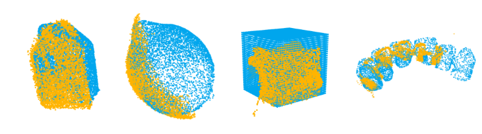

R3PM-Net: Real-time, Robust, Real-world Point Matching Network
AI4RWC@CVPRW 2026 - Oral Presentation
1AIMS Group, Dept. of Electrical Engineering, Eindhoven University of Technology
2Sioux Technologies, Mathware
Overview
R3PM-Net is a lightweight, global-aware, object-level point matching network designed to bridge the gap between approaches trained and evaluated on clean, dense, synthetic and real-world industrial point cloud data by prioritizing both generalizability and real-time efficiency. To this end, we additionally, propose two datasets, Sioux-Cranfield and Sioux-Scans.

Overview of the R3PM-Net Architecture. R3PM-Net employs a global-aware feature extraction module with shared weights to learn geometric similarities across a full receptive field.
Datasets
We propose two new datasets; Sioux-Cranfield and Sioux-Scans, to address the gap between synthetic datasets and real-world industrial data.
Sioux-Cranfield
Sioux-Cranfield is a diverse collection of 13 objects designed to evaluate model robustness across varying data qualities. The dataset contains 4 computer-aided design (CAD) models generated via photogrammetric reconstruction, 3 synthetic CAD models, and 6 pristine geometries from the Cranfield Benchmark. This combination allows for a comprehensive evaluation of performance on both high-quality synthetic meshes and realistically imperfect reconstructions.
Sioux-Scans
This dataset addresses the real-world challenge of registering physical scans to digital models. The targets are CAD models of seven small objects (shared with Sioux-Cranfield), while the sources are raw event-camera scans of the corresponding objects acquired via the custom Quality Control Sioux 3DoP setup. To generate these scans, the setup utilizes a laser beam and an event-based camera to produce accurate point clouds from moving or handheld objects. Unlike traditional frame-based sensors, this camera captures discrete brightness changes as the laser sweeps across the surface, resulting in highly precise point clouds. Before processing, gross outliers were filtered. However, these data represent a substantially more challenging setting than synthetic benchmarks, as they reflect inevitable deficiencies, such as sparsity, noise, and occlusions, rarely present in ideal simulated datasets. These artifacts stem from sensor noise, lighting sensitivity, and viewpoint-dependent gaps, particularly on sharp edges or reflective surfaces.

Sioux-Cranfield dataset

Sioux-Scans dataset
Results
Sioux-Cranfield
R3PM-Net demonstrates stable performance on the Sioux-Cranfield dataset, maintaining a perfect Fitness score of 1 and outperforming other baseline methods across nearly all metrics. It achieves comparable results to the more complex state-of-the-art methods, yet with a decisive efficiency advantage, performing at an inference speed over 6.5 times faster.

R3PM-Net performance on the Sioux-Cranfield dataset.
Sioux-Scans
R3PM-Net matches the 28.6% success rate of the baselines through a minimalist feature-extraction approach, in contrast to the more complex backbones employed by other methods. While all models solve the less challenging symmetrical cases, R3PM-Net successfully registers objects with complex geometries, such as the "teeth" model, where all other approaches fail.

Success cases of zero-shot (cube and teeth) and fine-tuned (all) R3PM-Net on the Sioux-Scans dataset.
Citation
@misc{kashefbahrami2026r3pmnetrealtimerobustrealworld,
title={R3PM-Net: Real-time, Robust, Real-world Point Matching Network},
author={Yasaman Kashefbahrami and Erkut Akdag and Panagiotis Meletis and Evgeniya Balmashnova and Dip Goswami and Egor Bondarau},
year={2026},
eprint={2604.05060},
archivePrefix={arXiv},
primaryClass={cs.CV},
url={https://arxiv.org/abs/2604.05060},
}